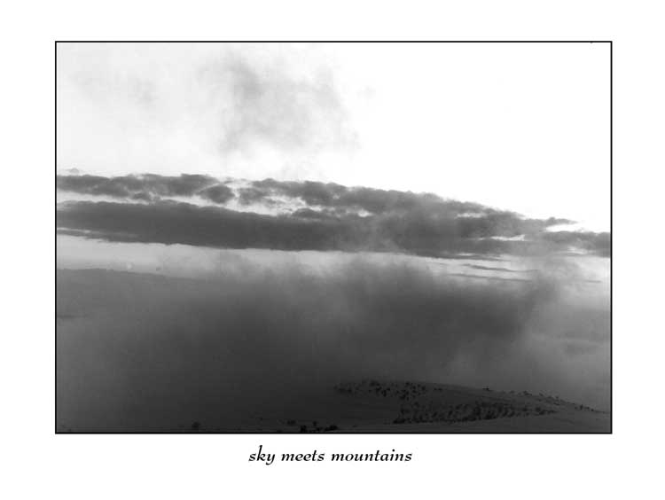

III
from "Songs from the Territories"
I am writing this on a rifle butt,
where Jacob dreamed of angel's visitations -
a ladder ascends into the bunker hut.
"This is the house of God, and I knew it not,"
they read at the initiation, and handed me a gun.
Is this the implementation?
Is this the iron rod,
which even the prince of peace must wield
upon this planet?
- Winter 1991, Ba'ad Arba (closed in 1995)
Basic Training Camp adjoining Beit El settlement

V
from "Songs from the Territories"
fog in the darkness
sky meets mountains
borders ill defined
and I am a twig
fallen in the stream
past stone walls and terraced hills
a stream like other streams
a twig like other twigs
the lights on the horizon
could be any ghost city of the night
another night another month
in the territories
in the watchtower
the wind whistles repetitiously
like a flute in the casbah
nothing is happening here
that meets the naked eye
in the telescope
barbed wire squiggles on the fence
like arabic script
celestial forces at large
struggle surreptitiously
beyond the searchlights penetration
for destinies of nations
the skies are charged tonight
lighting instead of missiles